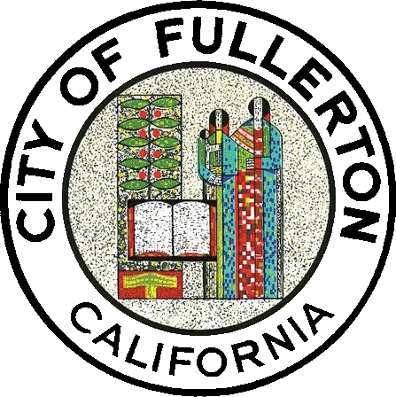

At S2 Engineering, we partner with contractors, design firms, construction managers, and local and state government agencies throughout California. Our team specializes in highways and roadways, airports, railways, ports, and intermodal projects. Our involvement with each project is tailored to the needs of our partners and is an integral part of what makes each one successful.
Projects
Project Portfolio

Consultant Construction Management & Inspection
Bridge and roadway programs with resident engineering, inspection, quality oversight, and stakeholder coordination.
View Category
Quality Management & Materials Testing
Program-level quality management and materials testing support for concrete, asphalt, aggregates, soils, and plant operations.
View Category
Source Inspection
Fabrication verification, source inspections, and compliance reporting for structural and transportation projects.
View Category
Port / Rail / Transit
Port modernization, transit upgrades, and rail-adjacent delivery support with complete project controls and documentation.
View CategoryOur Clients
Representative public agencies and transportation partners.


